Overview
An assessment library in Codio is a collection of existing assessment items.
You can create assessments libraries within your organization. You can organize your libraries by course number, programming language, department, etc.
You can use existing assessments from Codio's Global library.
To navigate through an assessments library, you filter based on tags. The Codio assessments library has a number of tags - your organization can come up with a convention that works for you!
Adding Questions to an Assessments Library
Once an assessment is added to an assessment library, it can be accessed later and added to a project or course with ease. Adding assessments to an assessment library has a few simple steps. Before you begin, you or someone else in your organization with adminstrator access needs to create an organization assessments library if you do not already have one.
-
The first step is creating the assessment. It is similar to how you normally create an assessment with a few things you should note:
-
Assessments on pages set to the 1 Panel without tree layout will be saved with a simple layout.
-
Use the metadata tab to tag your assessment so it appears when the assessments library is searched
-
Use the files tab to ensure all dependent files such as grading scripts, images used in the guides pane, etc. are associated with the assessment so it works properly when added from the library
Once the assessment is written, we can add it to an assessment library. Click the "SAVE IN LIBRARY" button on the bottom right of the window: 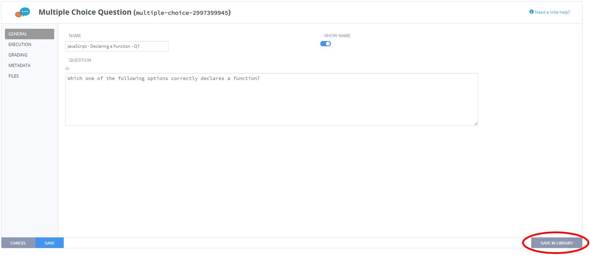
- A window will appear with a dropdown menu of all the available libraries that the question can be added to. Choose the desired library from the dropdown menu.
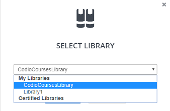
- Once the desired library has been chosen, press the blue "SELECT" button.
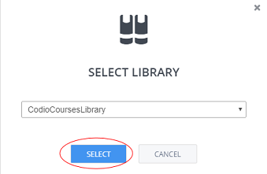
The assessment has now been added to the chosen library.
If you get an error message, you may not have write access to your organization's assessment library.
Once a question has been added, follow these steps to update the assessment in your organization's library.
Additionally, you can disconnnect questions!
Codio's Global Assessments Library
The Global Assessments Library is an assessment library that all Codio users have read-only access to. The library contains auto-graded assessment questions covering a wide variety of topics, difficulties, and assessment types. We are currently populating it with assessments in:
- Java
- C / C++
- Python
- JavaScript
- Data Structures (in Java)
Read more about assessment libraries here.
Features of Global Assessments Library
All assessments in the global library are auto-graded, there is no manual grading necessary. All assessments also contain example solutions and answer explanations for the student. Some will also have teacher notes to help better convey the intended learning objective of the assessment.
Using the Global Assessments Library
Using the library is similar to using any other assessment library in your organization. Simply go to the assessments drop-down in the guides editor, click on "Assessment Library", and choose the Codio Main under "Library Name".
You can filter through the different assessments by:
- Programming language
- Assessment type
- Category (topic-level)
- Content (sub-topic level)
- Learning Objective (in SWBAT form - "Students will be able to....")
- Bloom's Taxonomy level

Here is an example of the tags in a Codio library assessment: 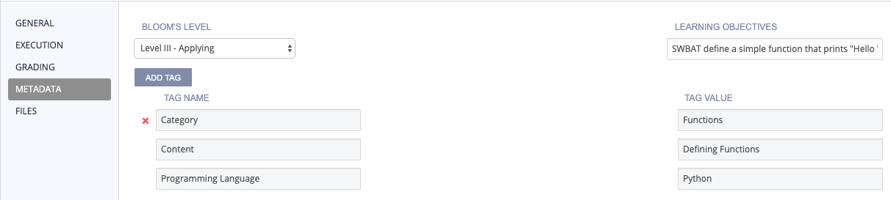
Assessment type is auto-detected and not manually specified.
You can even get a small preview of the question text! Once you find a suitable assessment, add it to your project.
Remixing questions from the Global Assessments Library
If you like an assessment in our assessments library but want to add your own twist to it, you can disconnect the question from the library.
Then, simply modify the assessment as you'd like!
Additionally, you can then add your version of the assessments to your organization's assessment library.
Bugs
If you find a bug or error with an assessment, please contact us
Unlinking and Updating Assessments from Library
Updating an Existing Assessment
-
Click on the "Add Assessment Icon" 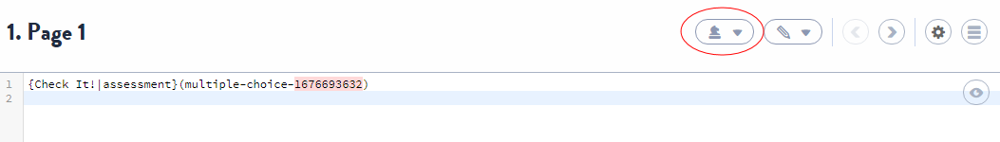
-
Click on the assessment you want to edit in the "Edit assessments" portion of the dropdown menu 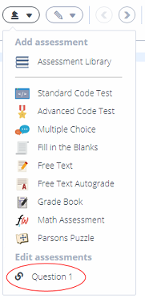
-
Change whatever it is you want to change
-
Click "Update In Library" 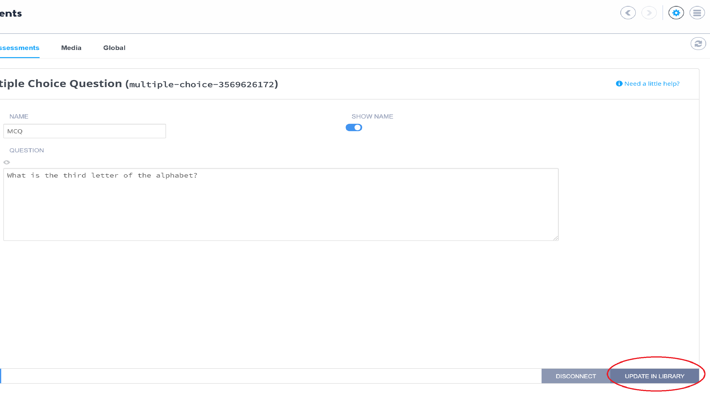
Unlinking an Assessment
-
Click on the "Add Assessment Icon"
-
Click on the assessment you want to disconnect in the "Edit assessments" portion of the dropdown menu
-
Click "disconnect" 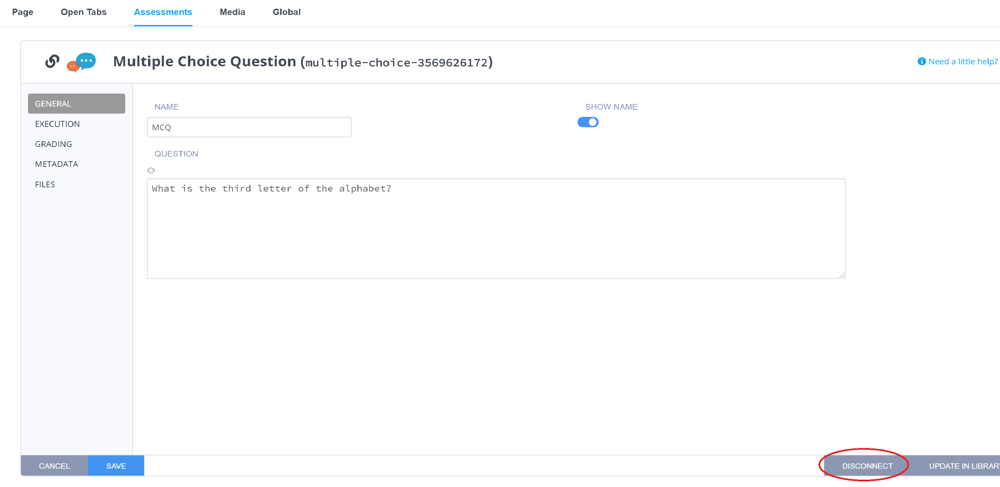
-
Codio will display a message confirming that the assessment has been successfully disconnected from the appropriate library. You should also notice the link icon is no longer present next to the assessment in the "Edit assessments" portion of the dropdown menu
Searching and Adding questions from the Assessments Library
Regardless of whether you are using Codio's global assessments library or your organization's assessment library, the steps for searching for and adding assessments from them are the same.
Searching Assessments Library
From the assessments drop down, select the "Assessment Library" option. 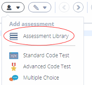
Use the drop down on the left to indicate which assessments library you want to search. 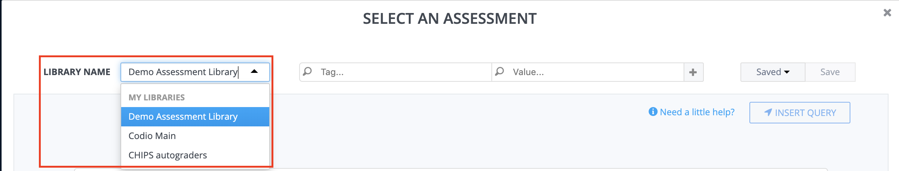
To narrow down the assessments, input a tag and value pair. For example, you can search by the "Programming Language" (tag) and indicate you want "Python" (value) questions. The search is not case-sensitive. You will notice that Codio tries to help you by presenting auto-complete suggestions. 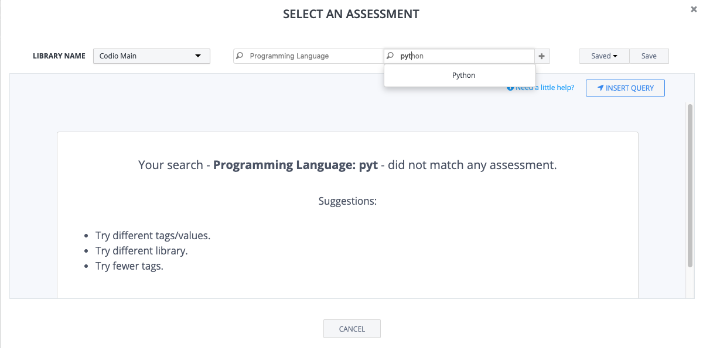
Once you have completed inputting the tag and value pair, you will get a list of results. 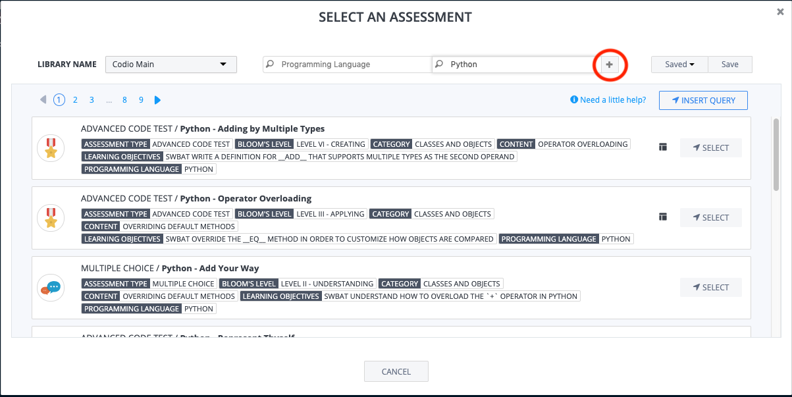
You can add as many additional tag and value pairs to narrow your results by clicking the plus sign to the right of the vale box. 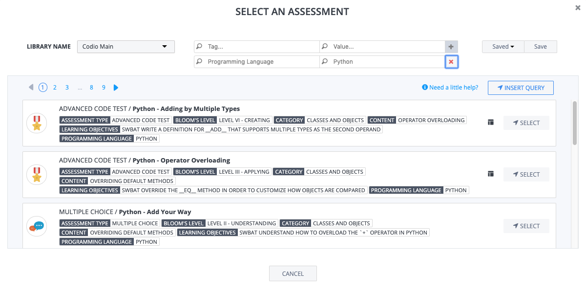
To navigate through your search results, you can use the scroll bar on the right to scroll through assessments on a page. Once you reach the bottom, you can use the page navigation in the top left to move backwards/forwards a page or jump to a certain page of results. 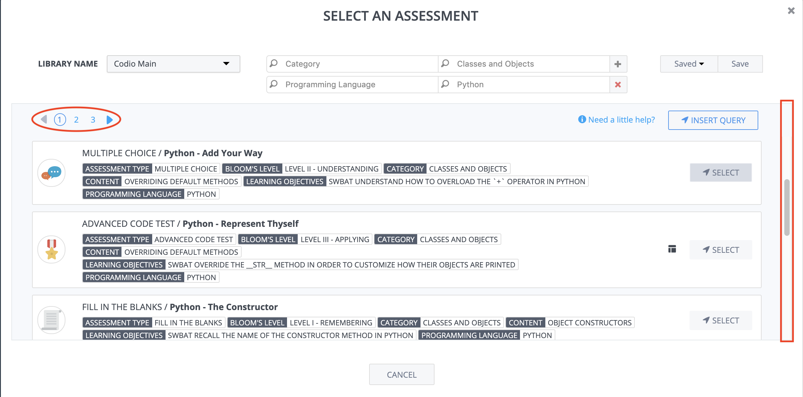
Previewing Question
You can get a sneak peek of the question text by clicking within a listed assessment's white box. The question text will appear below the listed value/tag pairs. 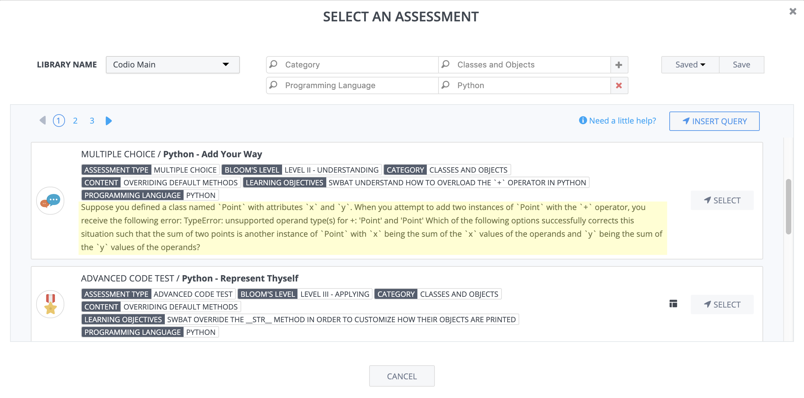
If you preview a second question, the first preview will collapse. 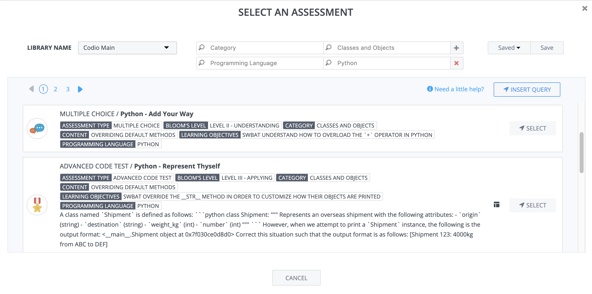
Saving Searches
If you find a set of particular search parameters you want to save, you can do so by simply clicking the "Save" button to the right of the tags and values boxes. 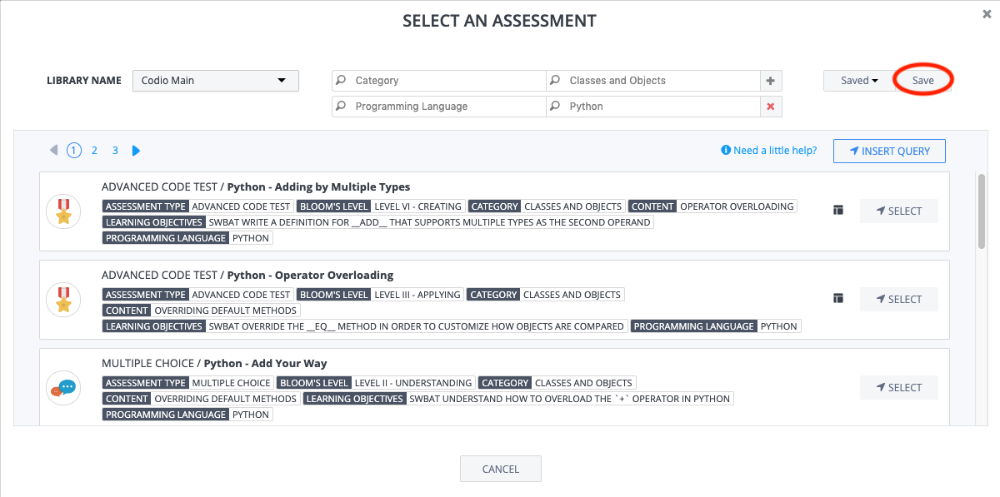
A prompt will ask you for the "Search Name" - this is how it will be listed in your saved search list. 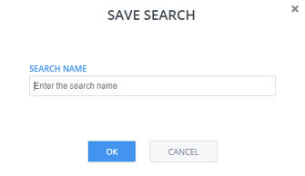
Using Saved Searches
To use a saved search, you click on the "Saved" drop down to the right of the tags and values boxes. Select the search you want to use by clicking on it's name. 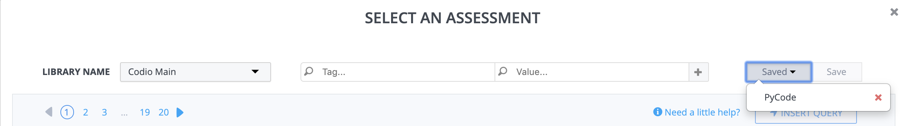
You will then be able to see all the parameters you saved previously. You can edit these search parameters freely without changing your saved search. 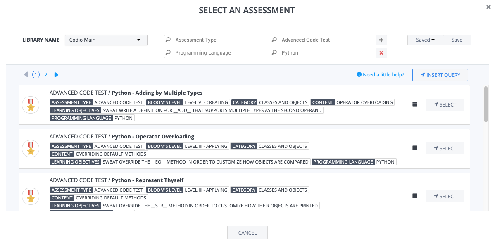
If you find a set of search parameters you like better, you can simply save the new set and delete your old search.
Deleting Saved Searches
To remove a saved search, you click on the "Saved" drop down to the right of the tags and values boxes. Delete the saved search by clicking on the red "x" to the right of it's name. 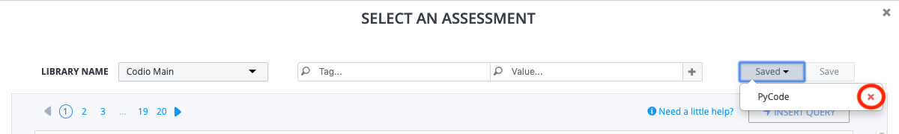
Adding Questions from Assessments Library
Once you have found an assessment you would like to add to, simply press the "Select" button to the right. 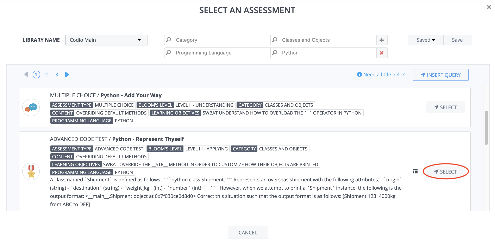
Please note the difference between layouts to know how it will be inserted.
Simple vs Complex Layouts
In Codio's assessments libraries, there are two types of layouts:
-
Simple An assessment in the library has a simple layout if it was added with the 1 Panel without tree layout. When adding a simple layout question to your project or book, the assessment will be inserted into the current page at your cursor's location.
-
Complex An assessment in the library has a complex layout if it was added with any layout besides 1 Panel without tree. When adding a complex layout question to your project or book, the assessment will be inserted on a new page directly after the current page.
How do you tell the difference?
When you are filtering the assessments library, you will notice the "complex layout" icon on assessments saved with a complex layout. All assessments without the icon are simple layout assessments.